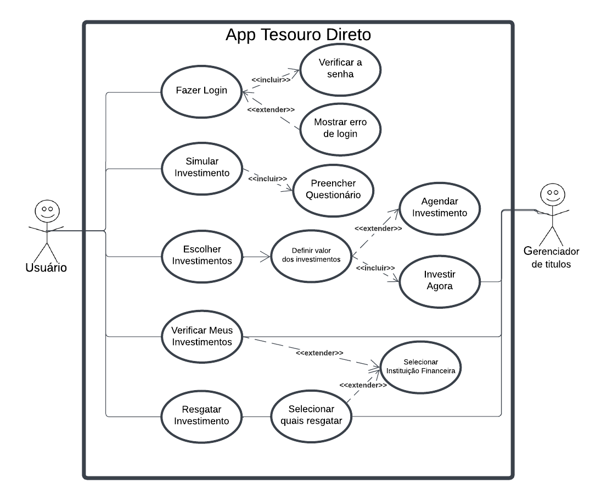

Casos de Uso
Introdução
Um caso de uso é uma representação detalhada de como o sistema será utilizado em um contexto ou situação específica. Ele descreve as interações entre os usuários e o sistema, destacando os passos necessários para alcançar um objetivo definido.
Seu principal objetivo é apoiar o desenvolvimento do sistema, proporcionando uma visão clara dos requisitos funcionais. Além disso, os casos de uso especificam as ações que os usuários podem realizar e como o sistema deve responder a essas ações.
Metodologia
O diagrama de caso de uso é uma ferramenta visual que resume as interações entre os usuários e um sistema, destacando suas funcionalidades e comportamentos principais. Ele é composto por atores, que representam os usuários ou outros sistemas que interagem com o sistema em questão, e casos de uso, que descrevem as ações realizadas pelos usuários e as respostas do sistema a essas ações.
Para criar casos de uso que atendam melhor às necessidades dos usuários, utilizamos a persona Gustavo Ribeiro. Essa abordagem ajuda a compreender as expectativas, desejos e desafios enfrentados pelos usuários finais do sistema. A inclusão dessa persona no processo permite modelar cenários realistas de uso, considerando as diferentes metas e necessidades do tipo de usuário que ela representa.
Voltando ao foco nos diagramas de caso de uso, a Tabela 1 apresenta os principais elementos que compõem o diagrama, oferecendo uma visão clara e estruturada de suas partes fundamentais.
Tabela 1: Elementos do diagrama de casos de uso
Tabela 1: Elementos do diagrama de casos de uso
| Nome | Função | Elemento |
|---|---|---|
| Ator | Representam os diversos tipos de usuários externos que interagem com o sistema. | |
| Elipse (Caso de Uso) | É utilizada para representar os casos de uso em um diagrama, destacando funcionalidades ou ações específicas que o sistema realiza em resposta às interações dos atores. A elipse identifica cada caso de uso, exibindo o nome correspondente em seu interior. |  |
| Retângulo (Sistema) | É utilizado para representar o sistema ou o componente em análise, agrupando os casos de uso e os atores associados a ele. |  |
| Flecha (Relações) | As setas são utilizadas para ilustrar as relações ou interações entre os atores e os casos de uso no diagrama. |  |
Autor: Víctor Schmidt
Além disso, no diagrama de casos de uso, é possível detalhar:
- Requisitos externos do sistema: as funcionalidades essenciais que o sistema deve fornecer para atender às demandas e expectativas dos usuários.
- Funcionalidades do sistema: as capacidades que o sistema oferece para satisfazer as necessidades dos usuários de maneira eficaz e eficiente.
- Requisitos do sistema em relação ao ambiente: as condições ou restrições impostas pelo sistema ao ambiente onde está inserido, especificando como ele interage com outros elementos para cumprir suas funções.
Diagrama de Casos de Uso
A figura 1 demonstra o diagrama de casos de uso.
Figura 1: Casos de uso do app Tesouro Direto

Autor: Víctor Schmidt
Especialização dos casos de uso
As tabelas de 2 a 10 mostram a especialização dos casos de uso.
Tabela 2: Fazer Login
Tabela 2: Fazer Login
| UC01 | Informações |
|---|---|
| Descrição | Permitir que o investidor ou interessado acesse sua conta no aplicativo. |
| Ator | Investidor ou Interessado |
| Pré-condições | O aplicativo deve estar instalado e conectado à internet. |
| Ação | O Investidor ou Interessado realiza login no aplicativo. |
| Fluxo principal |
|
| Fluxo alternativo |
|
| Fluxo de exceção |
|
| Pós-condições | O Investidor ou Interessado é autenticado e pode acessar as funcionalidades do aplicativo. |
| Rastreabilidade | RF33 e RF34 |
| Data de Criação | 06/12/2024 |
Autor: Víctor Schmidt
Tabela 3: Simular Investimento
Tabela 3: Simular Investimento
| UC02 | Informações |
|---|---|
| Descrição | Permitir que o Investidor ou Interessado realize simulações de investimento no Tesouro Direto. |
| Ator | Investidor ou Interessado |
| Pré-condições | O Investidor ou Interessado deve estar autenticado no aplicativo e conectado à internet. |
| Ação | O Investidor ou Interessado simula diferentes cenários de investimento. |
| Fluxo principal |
|
| Fluxo alternativo |
|
| Fluxo de exceção |
|
| Pós-condições | O Investidor ou Interessado visualiza as opções de investimento com base na simulação realizada. |
| Rastreabilidade | RF02 |
| Data de Criação | 06/12/2024 |
Autor: Víctor Schmidt
Tabela 4: Escolher Investimentos
Tabela 4: Escolher Investimentos
| UC03 | Informações |
|---|---|
| Descrição | O Investidor escolhe o investimento mais adequado para seus objetivos. |
| Ator | Investidor |
| Pré-condições | O Investidor deve estar autenticado e conectado à internet. |
| Ação | O Investidor escolhe um ou mais investimentos disponíveis. |
| Fluxo principal |
|
| Fluxo alternativo |
|
| Fluxo de exceção |
|
| Pós-condições | O Investidor realizou o investimento. |
| Rastreabilidade | RF35 |
| Data de Criação | 06/12/2024 |
Autor: Víctor Schmidt
Tabela 5: Verificar Meus Investimentos
Tabela 5: Verificar Meus Investimentos
| UC06 | Informações |
|---|---|
| Descrição | Permitir que o Investidor visualize e acompanhe os investimentos realizados. |
| Ator | Investidor |
| Pré-condições | O Investidor deve estar autenticado no aplicativo. |
| Ação | O Investidor verifica o histórico e status dos investimentos. |
| Fluxo principal |
|
| Fluxo alternativo |
|
| Fluxo de exceção |
|
| Pós-condições | O Investidor visualiza os detalhes de seus investimentos. |
| Rastreabilidade | RF01 |
| Data de Criação | 06/12/2024 |
Autor: Víctor Schmidt
Tabela 6: Resgatar Investimento
Tabela 6: Resgatar Investimento
| UC07 | Informações |
|---|---|
| Descrição | Permitir que o Investidor resgate investimentos realizados. |
| Ator | Investidor |
| Pré-condições | O Investidor deve estar autenticado e ter investimentos disponíveis para resgate. |
| Ação | O Investidor solicita o resgate de um ou mais investimentos. |
| Fluxo principal |
|
| Fluxo alternativo |
|
| Fluxo de exceção |
|
| Pós-condições | O resgate é processado e os valores são creditados na conta do Investidor. |
| Rastreabilidade | RF03 |
| Data de Criação | 06/12/2024 |
Autor: Víctor Schmidt
Tabela 7: Criar Meta/Sonho
Tabela 7: Criar Meta/Sonho
| UC08 | Informações |
|---|---|
| Descrição | Permitir que o Investidor ou Interessado crie metas ou sonhos financeiros no sistema. |
| Ator | Investidor ou Interessado |
| Pré-condições | O Investidor ou Interessado deve estar autenticado no sistema. |
| Ação | O Investidor ou Interessado inicia o processo de criação de uma meta ou sonho financeiro. |
| Fluxo principal |
|
| Fluxo alternativo |
|
| Fluxo de exceção |
|
| Pós-condições | A meta ou sonho financeiro é criado e armazenado no perfil do Investidor ou Interessado. |
| Rastreabilidade | RF04 |
| Data de Criação | 11/12/2024 |
Autor: Víctor Schmidt
Tabela 8: Simular Evolução Meta/Sonho
Tabela 8: Simular Evolução Meta/Sonho
| UC09 | Informações |
|---|---|
| Descrição | Permitir que o Investidor ou Interessado simule a evolução de suas metas ou sonhos financeiros no sistema. |
| Ator | Investidor ou Interessado |
| Pré-condições | O Investidor ou Interessado deve estar autenticado no sistema. |
| Ação | O Investidor ou Interessado inicia o processo de simulação da evolução de uma meta ou sonho financeiro. |
| Fluxo principal |
|
| Fluxo alternativo |
|
| Fluxo de exceção |
|
| Pós-condições | A simulação da evolução da meta ou sonho financeiro é exibida ao Investidor ou Interessado, mas não é salva no sistema (apenas descartada após análise). |
| Rastreabilidade | RF25 |
| Data de Criação | 11/12/2024 |
Esse caso de uso foi feito baseado nas Instruções do Professor sobre os requisitos a serem desenvolvidos no projeto.
Autor: Víctor Schmidt
Tabela 9: Relatórios Mensais de Evolução de Rendimentos
Tabela 9: Incluir Relatórios Personalizados
| UC10 | Informações |
|---|---|
| Descrição | Permitir que o sistema forneça relatórios mensais com a evolução dos rendimentos dos títulos adquiridos pelo investidor. |
| Ator | Sistema |
| Pré-condições | O investidor deve estar autenticado no sistema. |
| Ação | O sistema gera automaticamente relatórios mensais com base nos rendimentos acumulados dos títulos do investidor. |
| Fluxo principal |
|
| Fluxo alternativo |
|
| Fluxo de exceção |
|
| Pós-condições | O relatório mensal é gerado e armazenado para consulta futura na seção "Meus Relatórios". |
| Rastreabilidade | RF15 |
| Data de Criação | 11/12/2024 |
Esse caso de uso foi feito baseado nas Instruções do Professor sobre os requisitos a serem desenvolvidos no projeto.
Autor: Thales Euflauzino
Tabela 10: Dashboard com dados de rentabilidade
Tabela 10: Dashboard de rentabilidade e inflação
| UC11 | Informações |
|---|---|
| Descrição | Apresentar um dashboard com dados de rentabilidade dos títulos adquiridos e taxa de inflação. |
| Ator | Investidor |
| Pré-condições | O usuário deve estar autenticado no aplicativo e possuir títulos adquiridos em sua carteira. |
| Ação | O investidor acessa o aplicativo e visualiza o dashboard inicial. |
| Fluxo principal |
|
| Fluxo alternativo |
|
| Fluxo de exceção |
|
| Pós-condições | O investidor visualiza os dados consolidados sobre seus investimentos e pode realizar análises comparativas com a taxa de inflação. |
| Rastreabilidade | RF26 |
| Data de Criação | 12/12/2024 |
Esse caso de uso foi feito baseado nas Instruções do Professor sobre os requisitos a serem desenvolvidos no projeto.
Autor: Victor Rodrigues
Bibliografia
Lucidchart. Diagrama de Caso de Uso UML. Disponível em: <https://www.lucidchart.com/pages/pt/diagrama-de-caso-de-uso-uml>. Acesso em: 14 maio 2023.
BARBOSA, S. D. J.; SILVA, B. S. Interação Humano-Computador. Rio de Janeiro: Elsevier, 2011.
HENRIQUE, Paulo. Caso de Uso. Repositório da disciplina de Requisitos de Software da Universidade de Brasília, 2022. Disponível em: https://requisitos-de-software.github.io/2022.1-Youtube/modelagem/casouso/. Acesso em: 15 mai. 2023.
MACEDO, Lucas. Caso de uso. Repositório da disciplina de Requisitos de Software da Universidade de Brasília, 2022. Disponível em: https://requisitos-de-software.github.io/2022.2-Lichess/modelagem/casos_de_uso/. Acesso em: 15 mai. 2023.
REPOSITÓRIO DE REQUISITOS. Modelagem - Casos de Uso. Disponível em: https://requisitos-de-software.github.io/2023.1-BilheteriaDigital/modelagem/useCase/. Acesso em: 6 dez. 2024.
Histórico de Versões
| Versão | Data | Descrição | Autor(es) | Revisor(es) |
|---|---|---|---|---|
1.0 |
06/12/2024 | Criação da página | Víctor Schmidt | Victor Rodrigues |
1.1 |
07/12/2024 | Corrigindo Fonte para Autor | Thales Euflauzino | Víctor Schmidt |
1.2 |
07/12/2024 | Corrigindo Fonte para Autor | Thales Euflauzino | Víctor Schmidt |
1.3 |
10/12/2024 | Alterações e correções | Víctor Schmidt | Thales Euflauzino |
1.4 |
11/12/2024 | Adicionando Caso de Uso baseado nas Instruções do Professor | Víctor Schmidt | Thales Euflauzino |
1.5 |
11/12/2024 | Adicionando Caso de Uso baseado nas Instruções do Professor | Thales Euflauzino | Víctor Schmidt |
1.6 |
12/12/2024 | Adicionando Caso de Uso baseado nas Instruções do Professor | Victor Rodrigues | Thales Euflauzino |